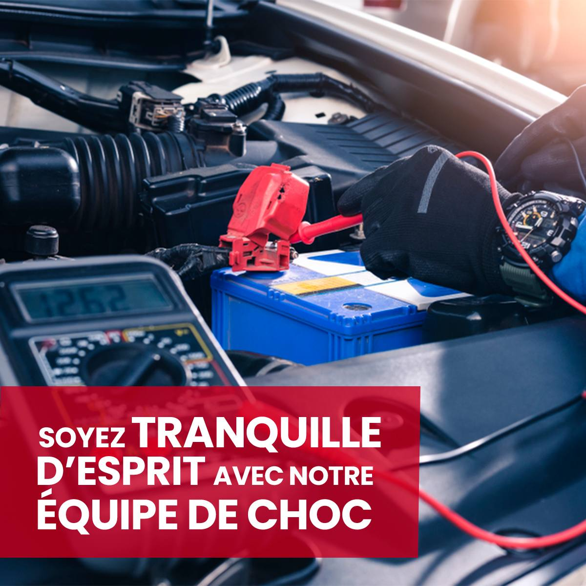

En quoi consiste une réparation de carrosserie ?
Bon à savoir : La réparation de la carrosserie d'une voiture est couverte par l'assurance auto lorsque le sinistre est inclus dans les garanties du contrat, telles que les dommages causés par un accident ou un acte de vandalisme. Cependant, la prise en charge dépend également de la franchise applicable et de la responsabilité de l'assuré lors de l'incident. Si vous avez abimé seul votre carrosserie, vous pouvez aussi être indemnisé si vous avez souscrit à la garantie dommages tous accidents.
Peut-on réparer la carrosserie soi-même ?
Comme son nom l'indique, une réparation de carrosserie consiste à rénover votre voiture et plus exactement à remettre en état sa carrosserie, c'est-à-dire l'ensemble des tôles qui recouvre votre voiture. La carrosserie a à la fois un rôle de sécurité, puisqu'elle protège l'habitacle du véhicule, et esthétique. Mais elle est aussi souvent victime de rayures, taches, chocs, etc. Selon la partie de la carrosserie qui est touchée et la nature du problème, différentes techniques peuvent être utilisées :
- Le remplacement de la pièce : en cas de dommage important, il est possible de remplacer la pièce abîmée sans toucher au reste de la carrosserie s'il est intact.
- Le redressage : il consiste à redresser une zone déformée après un choc grâce à des outils spéciaux.
- Le débosselage : c'est une technique qui vise à supprimer les impacts et bosses causés par un choc.
Comment réparer un impact sur la carrosserie ?
Voici quelques techniques pour réparer un impact sur la carrosserie de votre voiture, selon la nature et la gravité du dommage :
- Technique 1 : Utilisation de mastic de carrosserie pour combler les petites bosses.
- Technique 2 : Ponçage et application de peinture pour une finition lisse.
- Technique 3 : Réparation professionnelle pour les impacts plus complexes.
Quel est le prix d'une réparation de carrosserie ?
Le coût de la réparation dépend de plusieurs facteurs, tels que la gravité des dommages, le type de réparation nécessaire et le type de véhicule. Il est conseillé de demander plusieurs devis avant de choisir un prestataire.
